Лео: «Проблема в отрисовке кодом — из-за неё ужасное качество. Пусть качество будет через наши модели, а человек лишь выбирает стилистику, гамму, идею и потом правит диалогом». Здесь проверено: Nano Banana Pro в Gemini рисует сцену вместе с русской надписью и приёмом Метеоры; кода поверх нет. Образец стиля из галереи идёт модели картинкой. Каждую надпись проверяет распознавание — буква в букву. Вторая модель для сравнения — Seedream 5 Lite. Всё бесплатно, через очередь бота, на последнем посте канала.
| № | Стиль | Nano Banana Pro (Gemini) | Seedream 5 Lite |
|---|---|---|---|
| 1 | Реализм-сцена (Красный вырез неба / Один из серой толпы) | ✅ буква в букву · распознано: «ДОРОГИЕ ДЕНЬГИ» | ✅ буква в букву · распознано: «ДОРОГИЕ ДЕНЬГИ» |
| 4 | Текст в сцене (табло) | ✅ буква в букву · распознано: «ПЯТЬ ГИРЬ / BTC $126K - CANCELLED / FED HIKE DEC 9 - 90% BOARDING / DXY 103.43 - ON TIME / BTC ETF -$1.91B - DEPARTED / » | ✅ буква в букву · распознано: «ПЯТЬ ГИРЬ / BTC $126K - CANCELLED / FED HIKE DEC 9 - 90% BOARDING / DXY 103.43 - ON TIME / BTC ETF -$1.91B - DEPARTED / » |
| 5 | Текст + 3D-элемент (улика) — приём Метеоры A1 | ❌ не совпало · распознано: «5 ГАРЬ / PEEN» | ✅ буква в букву · распознано: «5 ГИРЬ» |
Надпись: «ДОРОГИЕ ДЕНЬГИ» · пост «Пять гирь на шее биткоина»
Ровно по формуле стиля: две стены, большое красное небо, надпись на спокойном фоне, люди спиной. Буквы узкие и плотные, распознаны с первого раза. Сравните с кадром Андрея ниже: там надпись порублена трубами.
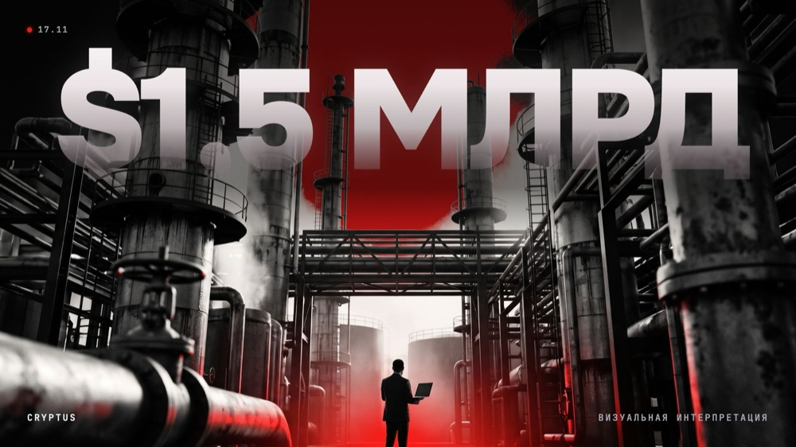
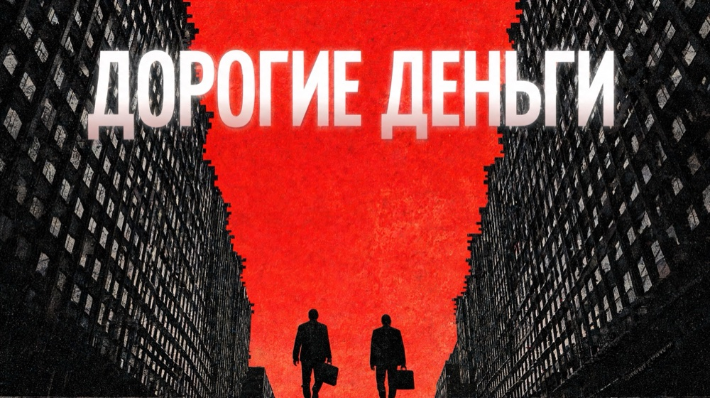
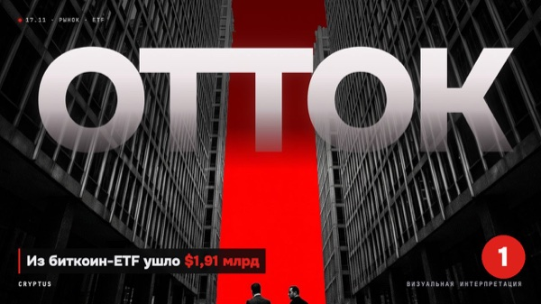
Seedream тоже написал «ДОРОГИЕ ДЕНЬГИ» без ошибки. Стиль близок, фасады грубее.
Надпись: «ПЯТЬ ГИРЬ» · пост «Пять гирь на шее биткоина»
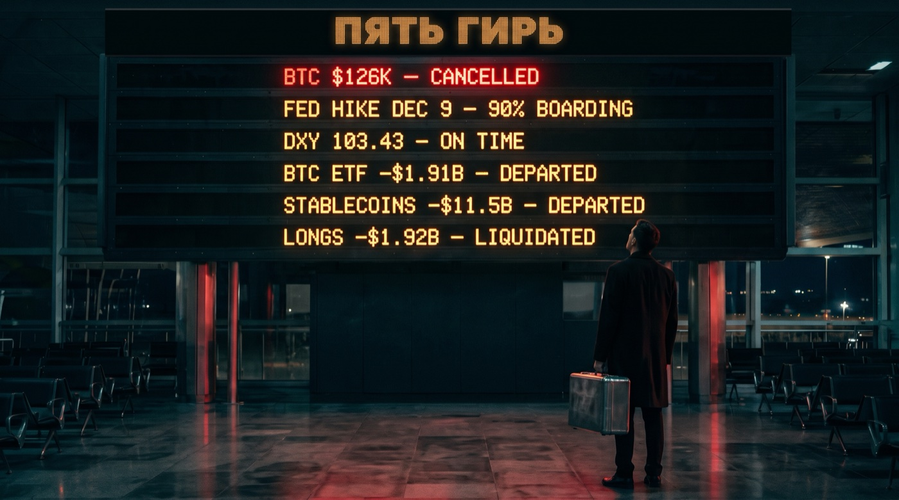
Время 10:10 — почти всё это ожидание: очередь браузера занимал Deep Research бота (~8 мин), сам кадр рисовался ~1,5 мин. Шапка «ПЯТЬ ГИРЬ» тем же LED-шрифтом, все 6 строк с $ и запятыми — верно. Минус: человек полуоборотом, профиль читается. Критик по рецепту это бракует, бот дорисует вариант.
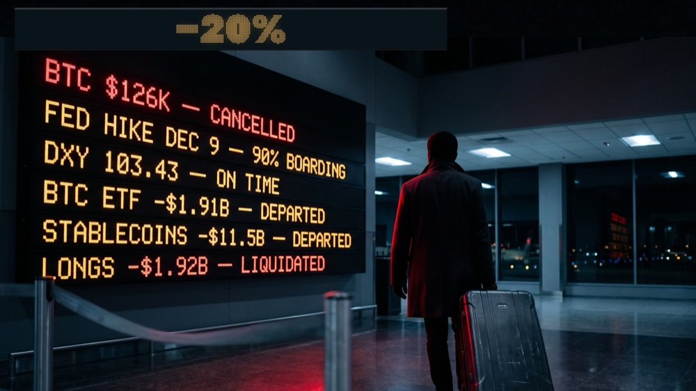
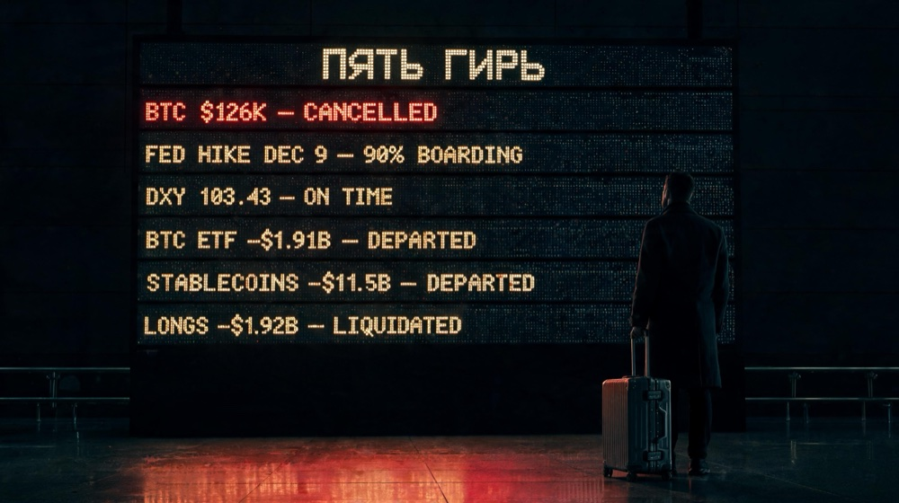
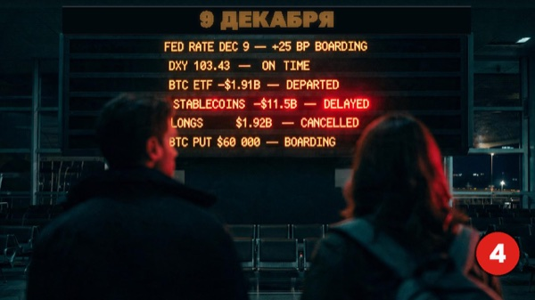
Seedream: шапка и строки тоже буква в букву, человек строго спиной. Здесь Seedream не хуже Gemini.
Надпись: «5 ГИРЬ» · пост «Пять гирь на шее биткоина»
Сам кадр — уровень показа: монета с цепями и пятью гирями, буквы плотные. Но монета зашла на середину «И», и распознавание прочитало «ГАРЬ». Ещё на ободе монеты мелкая латиница — по рецепту это брак. Бот отправил бы такой кадр на повтор. В рецепт добавлено: предмет перекрывает только низ каждой буквы; на монете — только ₿.
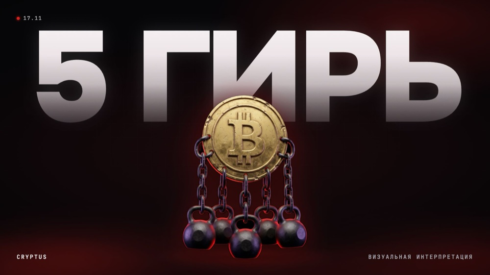
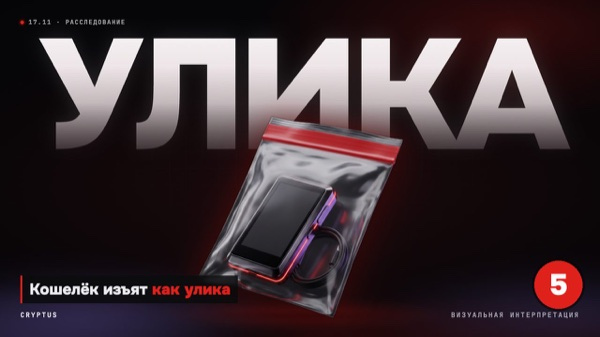
Seedream без образца: «5 ГИРЬ» прочитано буква в букву, гирь пять, монета с ₿, чистый чёрный фон. Для этого стиля Seedream — полноценная вторая модель.
Каждая правка — одно сообщение: что поменять, потом якорь «всё остальное без изменений, надпись «…» буква в букву». Третья — «комментарий к месту»: место названо словами и долями кадра. Правка 1 — в том же чате; 2 и 3 — путём ядра: новый временный чат, кадр приложен.
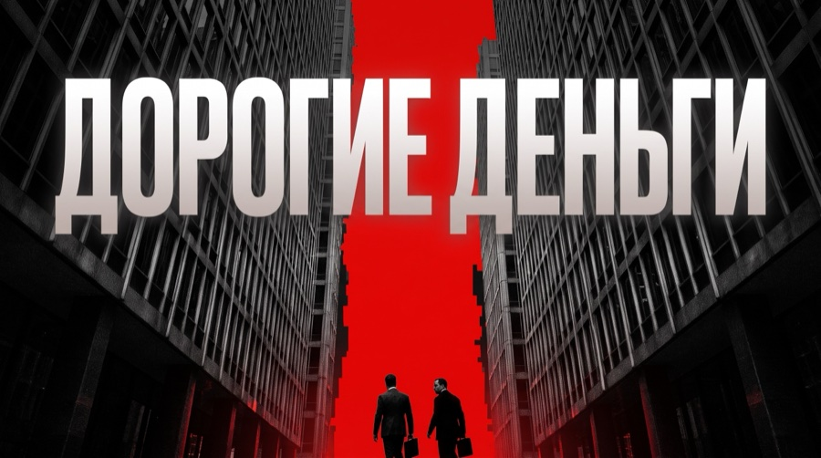
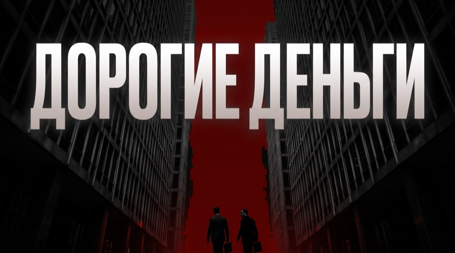
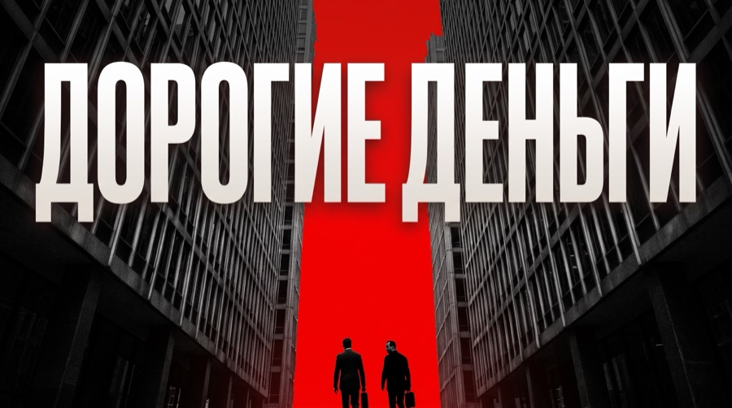
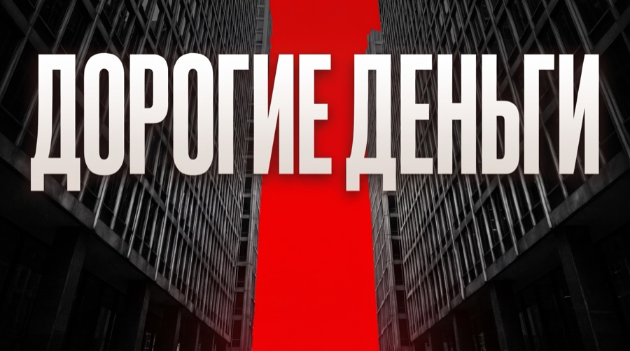
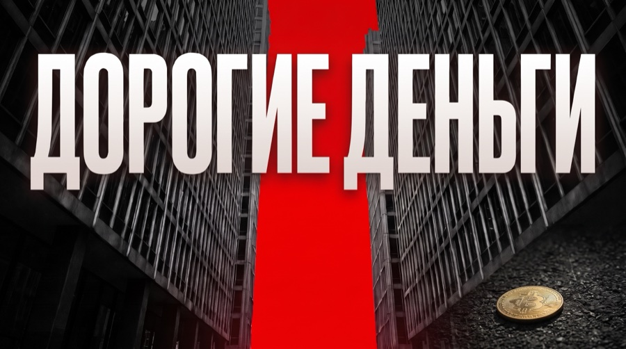
Правка 1 сделана в том же временном чате Gemini, сразу после кадра. Фон стал темнее, композиция и надпись на месте, но распознавание прочитало «ДЕНЫИ» вместо «ДЕНЬГИ»: «ЬГ» сблизились. Поэтому после каждой правки нужна проверка букв, а в рецепт добавлено правило «буквы не касаются». Правки 2 и 3 сделаны путём ядра: новый временный чат, текущий кадр приложен, текст «Измени на этой картинке: … Сохрани … надпись буква в букву». Обе выполнены точно, менялось только названное, надпись распознана буква в букву. На это ушло 1:07 и 2:03. С первой попытки они не прошли: вечером вкладку Gemini перехватывают другие задания бота, а бот ждёт картинку не дольше 4 минут.
Брак без обсуждения:
Оценки: text — 1–10: надпись гигантская (≈80–85% ширины), плотная, градиент белый → серый, ровный трекинг, читается в превью Telegram за полсекунды. · integration — 1–10: надпись живёт в сцене: свет и тени сцены на ней согласованы, перекрытие предметом — только низ букв, без «наклейки». · style — 1–10: совпадает с образцом стиля (раскладка, свет, палитра выбранного настроения). · idea — 1–10: идея человека / ТЗ видна с первого взгляда. · anomalies — 1–10: 10 — нет кривых рук, плавленых предметов, двойников.
Решение: total ≥ 8 и нет hard_reject → в чат; 7 → ещё один вариант; ≤ 6 → повтор с notes_for_retry (по-английски, 1–2 фразы: что поменять в сцене; надпись и типографику не трогать).
Работает. Модель сама пишет русскую надпись нужным шрифтом и местом: 5 из 6 кадров распознаны буква в букву с первого раза, в обеих моделях. Сцены по формуле стиля, без «каши» от кода поверх. Табло и «Реализм» — уровень эталона.
Чем держим качество: образец стиля прикладывается картинкой; надпись дословно и по буквам; распознавание после каждого кадра и каждой правки; не совпало — повтор, затем вторая модель. Надпись кодом поверх не ставится никогда. Слабое место — предмет перед словом (№5): модель может закрыть середину буквы. Правило уже в рецепте, а распознавание такой кадр ловит.
Seedream в этом прогоне не уступил Gemini по буквам (3 из 3), но рисует грубее. Оставляем второй моделью.
Проверено живьём 17.11 вечером: 3 стиля × 2 модели и 3 правки, бесплатно, по одному заданию, в Telegram ничего не уходило. Шаблоны стилей 2, 3, 6 и карточек написаны, но живьём в этот раз не рисовались.